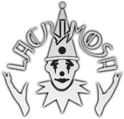
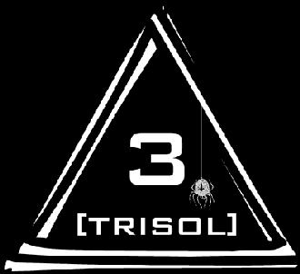

홈 > 브랜드 매거진 > Hall of Sermon
Hall of Sermon
홀 오브 서먼(Hall of Sermon)은 1991년 틸로 볼프가 설립한 고딕 메탈 레이블이다. 자신의 밴드 라크리모사를 발매하기 위해 세운 스위스 기반 독립 레이블이다.
산업 분야 미디어·엔터테인먼트 · 공개 등급 디렉토리 · 브랜드 평가 3.2 ★

한눈에 보는 브랜드
홀 오브 서먼(Hall of Sermon)은 1991년 틸로 볼프가 설립한 고딕 메탈 레이블이다. 자신의 밴드 라크리모사를 발매하기 위해 세운 스위스 기반 독립 레이블이다.
브랜드 관점
홀 오브 서먼은 틸로 볼프가 라크리모사를 발매하려 세운 고딕 메탈 레이블이다. 설립·운영 주체, 주력 장르, 대표 아티스트를 함께 보면 미디어·엔터테인먼트 안에서의 위치가 또렷해진다.
시작과 성장
1991년 라크리모사의 틸로 볼프가 자신의 음반을 발매하고 재정 독립을 위해 설립했다. 스위스 바젤을 거점으로 라크리모사를 비롯한 고딕·다크웨이브 아티스트를 발매해 왔다.
브랜드 아이덴티티
Hall of Sermon의 아이덴티티는 브랜드명, 로고 사용 여부, 업종 언어, 국가적 배경을 중심으로 정리됩니다. 공개 로고 자산은 추후 권리 확인 후 보강할 수 있도록 텍스트 메타데이터 중심으로 관리합니다.
확장 지식
스위스 바젤 기반의 고딕 메탈 독립 레이블이다.
제품과 서비스
고딕 메탈·다크웨이브 음반을 발매한다. 라크리모사 등이 대표 아티스트다.
사람들
라크리모사의 틸로 볼프가 1991년 설립했다.
현재 상태
타임라인
정리된 연도형 이벤트가 없습니다.
BI/CI 변천사
함께 읽을 브랜드
 미디어·엔터테인먼트 · 디렉토리Megaforce Records
미디어·엔터테인먼트 · 디렉토리Megaforce Records메가포스 레코드(Megaforce Records)는 1982년 존·마샤 자줄라 부부가 미국에서 설립한 헤비메탈 레이블이다. 메탈리카의 데뷔작 'Kill 'Em All...
 미디어·엔터테인먼트 · 디렉토리DJM Records
미디어·엔터테인먼트 · 디렉토리DJM RecordsDJM 레코드(DJM Records)는 1969년 영국에서 음악 출판사 딕 제임스 뮤직 산하로 만들어진 음반 레이블이다. 엘튼 존의 초기 영국 음반을 발매한 것으로...
 미디어·엔터테인먼트 · 디렉토리Minus
미디어·엔터테인먼트 · 디렉토리Minus마이너스(Minus, m_nus)는 1998년 테크노 아티스트 리치 호틴이 설립한 미니멀 테크노 레이블이다. 캐나다 윈저와 독일 베를린을 기반으로 한 아티스트 운영...

미디어·엔터테인먼트 · 디렉토리Trisol Music Group트리졸 뮤직 그룹(Trisol Music Group)은 1997년 알렉산더 슈톰(Alexander Storm) 등이 독일 디부르크에서 설립한 다크웨이브·고딕 음반 레...
Za
Zappa Records
미디어·엔터테인먼트 · 디렉토리Zappa Records자파 레코드(Zappa Records)는 1977년 프랭크 자파가 미국에서 세운 음반 레이블이다. 자파의 음반을 발매하기 위한 레이블로, 현재 자파 패밀리 트러스트가...
De
Den Kongelige Samling
미디어·엔터테인먼트 · 편집 검수Den Kongelige SamlingDen Kongelige Samling는 2025년에 기록된 Museums, Galleries & Libraries 계열의 브랜드 아이덴티티 사례입니다. Kontra...
Et
Eternal Research
미디어·엔터테인먼트 · 편집 검수Eternal ResearchEternal Research는 2025년에 기록된 Sound 계열의 브랜드 아이덴티티 사례입니다. Cotton가 아이덴티티 작업의 디자이너로 기록되어 있습니다. 공...
Ex
Expo '90
미디어·엔터테인먼트 · 편집 검수Expo '90Expo '90는 1987년에 기록된 World Expos 계열의 브랜드 아이덴티티 사례입니다. Mitsuo Katsui가 아이덴티티 작업의 디자이너로 기록되어 있습...